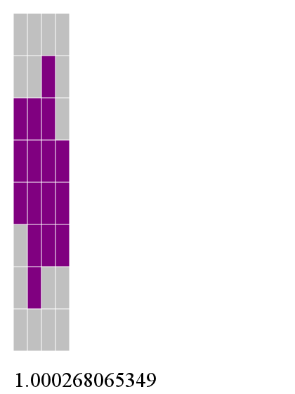

; qsort.lviv
; quicksort implemented in lviv
; filter2
; given a predicate in slot 0 and a list in slot 1
; filter the list into two lists, one for which the
; predicate is true and one for which it is false
( (*tList *fList) ; if the list is null, return the true and false lists
(*lList uncons (*tList cons *fList) ; otherwise, take the first element, cons it to tlist
(*fList cons *tList swap) ; or flist as appropriate
3 pick *pred apply if ; (test whether to cons to tList or fList)
3 roll ***pred eval *filt2Hlp) ; then get the stack back in order and call again
*lList null? if ) ; (test whether list is null)
(*tList *fList *lList *pred) lambda *filt2Hlp define
( () () *lList **pred eval *filt2Hlp ) ; call the helper function with empty tList and fList
(*lList *pred) lambda *filt2 define
; qsort: use the first element of the list as the pivot
; filter the list and qsort the resulting lists
( (*lList) ; if it's 0 or 1 elm long, just return it
(*lList uncons dup 3 unroll ; otherwise, get the next pivot, save off the pivot
(***n <) cons (***n) lambda filt2 ; filter the list into greater and lesser lists
*qsort swap ; sort the first part
*qsort 3 roll :cons ; sort the second part, then replace the pivot
append ; append them, and we're sorted
)
(#t) (*lList cdr null?) *lList null? if if )
(*lList) lambda *qsort define
TriHs
A Tetris clone in Haskell using Cairo and Gtk2Hs. In 2-player mode, you can screw with your opponent by switching their next piece for a random one.

BC
A ballistic calculator for Maemo5 using the GNU Ballistics Library.
synthres
Generate a series-parallel network of unit-sized resistors that synthesize an arbitrary resistance value.

resgrad
Generate optimal 2d resistor pack layout for N:1/N ratioed resistors in the presence of linear gradients in X and Y.

sousvide628
Some rudimentary code to use a PIC16F628a to control a heater and pump for Sous-vide.